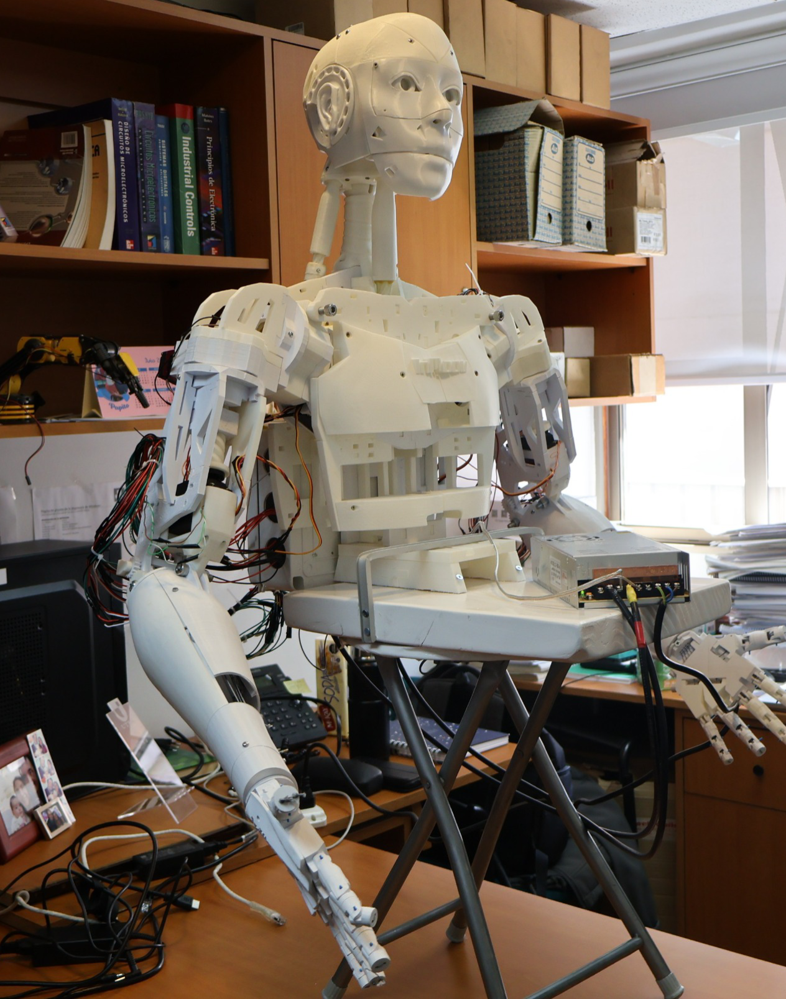
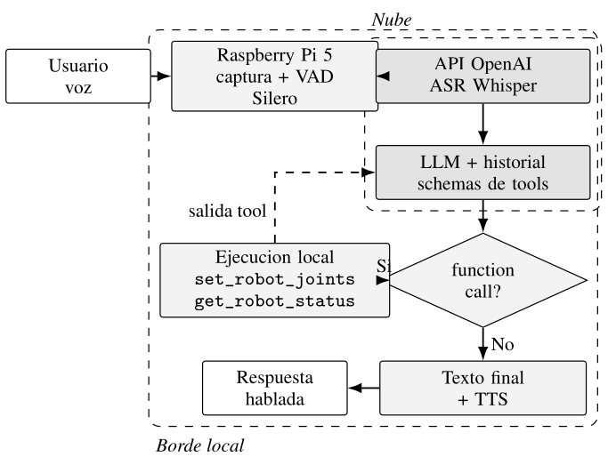
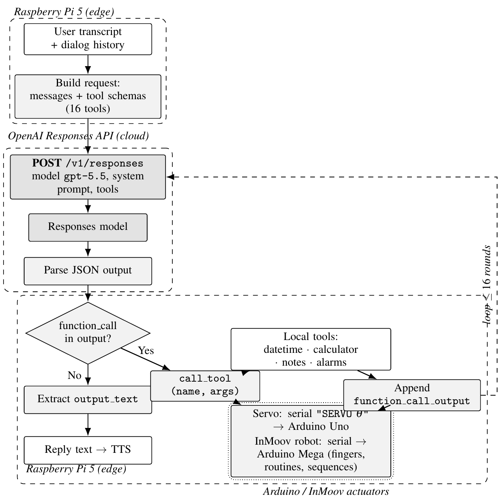
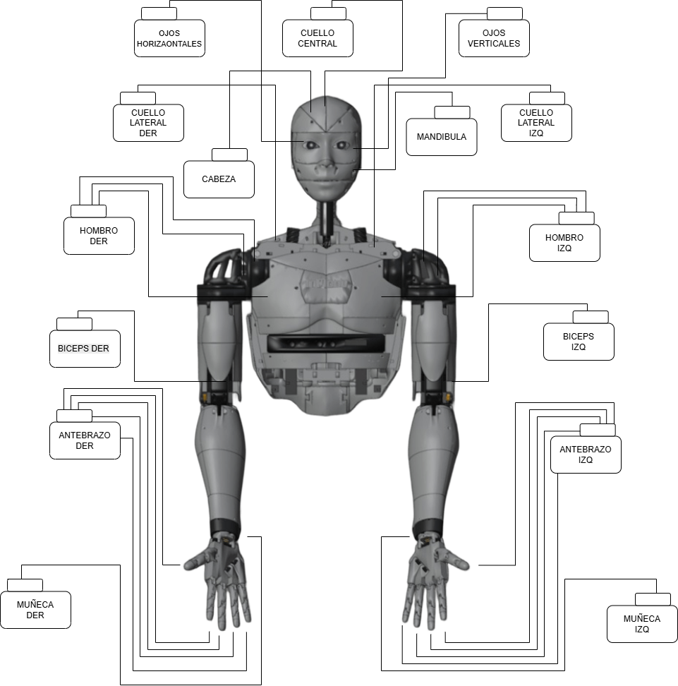
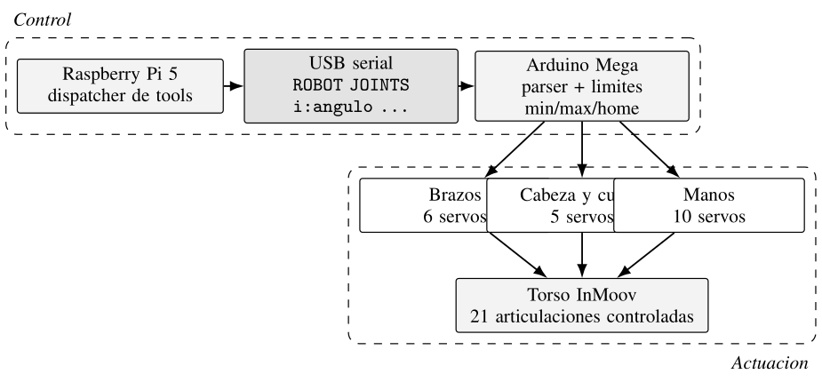

Detección de voz local, ASR en la nube y un LLM con function calling que comanda 21 articulaciones sobre una Raspberry Pi 5 y un Arduino Mega. Local voice activity detection, cloud ASR, and an LLM with function calling that drives 21 joints on a Raspberry Pi 5 and an Arduino Mega.

La robótica humanoide open-source, como InMoov, ofrece una vía de bajo costo para investigación y docencia, pero estas plataformas quedan parcialmente inoperativas cuando sus componentes se descontinúan y rara vez exploran comportamientos generados en tiempo de ejecución. Este trabajo presenta el recomisionado del torso de un robot InMoov —reemplazando y validando actuadores descontinuados— y su integración con una arquitectura de voz a acción basada en modelos de lenguaje grandes (LLM). El sistema combina detección de actividad de voz local (Silero VAD), reconocimiento de habla en la nube (Whisper) y function calling guiado por el LLM sobre una Raspberry Pi 5 que comanda un Arduino Mega. En lugar de exponer funciones de movimiento específicas, una interfaz general de pares articulación-ángulo para 21 articulaciones permite al LLM componer acciones articuladas con validación de límites antes de cada comando. Open-source humanoid robots such as InMoov provide a low-cost platform for research and engineering education, but they often become partially inoperable as original components are discontinued, and are typically limited to predefined motion sequences. This paper presents the recommissioning of an existing InMoov torso — replacing and validating discontinued actuators — and its integration with a voice-to-action architecture based on large language models (LLMs). The system combines local voice activity detection (Silero VAD), cloud speech recognition (Whisper), and LLM-driven function calling on a Raspberry Pi 5 that talks to an Arduino Mega. Instead of exposing motion-specific functions, a generalized joint-angle interface for 21 controlled joints lets the LLM compose articulated actions through a unified representation, with joint-limit validation before every command.
Palabras clave: robots humanoides, InMoov, interacción por voz, LLM, function calling, selección de acciones, robótica de bajo costo, edge computing.
Qué aporta este trabajo, en tres puntos.
Diseño e implementación de una arquitectura de voz a acción para un humanoide de bajo costo, integrando VAD local, ASR en la nube y function calling guiado por LLM sobre Raspberry Pi 5 + Arduino Mega.Design and implementation of a voice-to-action architecture for a low-cost humanoid, integrating local VAD, cloud ASR and LLM-driven function calling on a Raspberry Pi 5 + Arduino Mega.
Una interfaz de acción general basada en pares articulación-ángulo para 21 articulaciones controladas, que genera acciones articuladas sin funciones específicas de movimiento.A generalized action interface based on joint-angle pairs for 21 controlled joints, generating articulated actions without predefined motion-specific functions.
Validación experimental sobre un torso InMoov recomisionado, con evidencia preliminar de generación de acciones no scripteadas a partir de comandos de voz semánticos.Experimental validation on a recommissioned InMoov torso, with preliminary evidence of non-scripted action generation from semantic voice commands.
El pipeline de voz corre sobre la Raspberry Pi 5. Silero VAD segmenta localmente el turno del usuario; el audio se transcribe con un servicio basado en Whisper y se agrega al historial de diálogo. El LLM decide entonces si responde con texto o invoca una herramienta local mediante function calling. The voice pipeline runs on the Raspberry Pi 5. Silero VAD segments the user's turn locally; the audio is transcribed by a Whisper-based service and appended to the dialog history. The LLM then decides whether to answer with text or invoke a local tool through function calling.
La Pi mantiene un bucle de solicitud/respuesta con el modelo: construye cada solicitud con el historial y los esquemas de herramientas, ejecuta localmente la herramienta solicitada y devuelve su salida —hasta 16 rondas— hasta producir una respuesta final que se envía a síntesis de voz. The Pi keeps a request/response loop with the model: it builds each request from the dialog history and the tool schemas, runs any requested tool locally, and returns its output — up to 16 rounds — until a final reply is produced and sent to text-to-speech.


function_call, la Pi ejecuta la herramienta —incluida la actuación serial del InMoov vía Arduino—, agrega el function_call_output y vuelve a consultar al modelo (≤ 16 rondas).
LLM request/response cycle with local tool calling. On a function_call, the Pi runs the tool — including serial actuation of the InMoov via Arduino — appends the function_call_output and re-queries the model (≤ 16 rounds).
La acción física se comanda con una única interfaz general en lugar de funciones específicas de movimiento. El modelo ve dos herramientas: get_robot_status para consultar el robot y set_robot_joints para enviar consignas articulares parciales.
Physical action is driven through one general interface instead of movement-specific functions. The model sees two tools: get_robot_status to query the robot and set_robot_joints to send partial joint targets.
Cada llamada a set_robot_joints lleva una lista de pares articulación-ángulo; las articulaciones omitidas conservan su posición. Por eso un comando como «saluda» no está atado a una rutina fija: puede traducirse en distintas combinaciones de cabeza, mano y brazo. Antes de llegar al Arduino Mega, la Pi valida nombres, rechaza duplicados y verifica cada ángulo contra los límites de las 21 articulaciones; los pares válidos se serializan al comando compacto ROBOT JOINTS i:ángulo ….
Each set_robot_joints call carries a list of joint-angle pairs; omitted joints hold their position. That is why a command like "wave" is not tied to a fixed routine — it can map to different combinations of head, hand and arm. Before reaching the Arduino Mega, the Pi validates names, rejects duplicates and checks every angle against the limits of the 21 joints; valid pairs are serialized to the compact ROBOT JOINTS i:angle … command.
{
"joints": [
{ "joint": "cabeza", "angle_degrees": 90 },
{ "joint": "indice_der", "angle_degrees": 40 }
]
}
// → serial: ROBOT JOINTS 6:90 17:40 → OK JOINTS 2
requiere transcripción del usuario u, historial de diálogo H construir solicitud con H, u y esquemas de herramientas mientras el LLM retorne una llamada de función: si la función es get_robot_status: consultar disponibilidad del robot si no, si la función es set_robot_joints: validar articulaciones, duplicados y límites serializar consignas como ROBOT JOINTS enviar comando al Arduino Mega retornar el resultado de la herramienta al LLM generar la respuesta final y reproducirla por síntesis de voz
require user transcript u, dialog history H build request with H, u and the tool schemas while the LLM returns a function call: if the function is get_robot_status: query robot availability else if the function is set_robot_joints: validate joints, duplicates and limits serialize targets as ROBOT JOINTS send command to the Arduino Mega return the tool result to the LLM produce the final reply and play it via text-to-speech
La seguridad vive en la validación. Como el LLM puede pedir cualquier consigna, la variabilidad del comportamiento viene de elegir ángulos, no de eliminar restricciones mecánicas. Safety lives in validation. Since the LLM can request any target, behavioral variety comes from choosing angles, not from removing mechanical limits.
El torso InMoov ya existía, pero varios actuadores y componentes originales quedaron descontinuados. Se reemplazaron por equivalentes actuales, verificando compatibilidad mecánica y eléctrica articulación por articulación. The InMoov torso already existed, but several original actuators and parts were discontinued. They were replaced with current equivalents, verifying mechanical and electrical fit joint by joint.


| Grupo | Servo original (kg·cm) | Servo nuevo (kg·cm) | N.º |
|---|---|---|---|
| Hombros | Hitec HS-805BB (≈24) | DS5180 (80) | 6 |
| Bíceps | Hitec HS-805BB (≈24) | DS5180 (80) | 2 |
| Cabeza (rotación) | Hitec HS-805BB (≈24) | DS5180 (80) | 1 |
| Cuello (vertical) | HK15298B (20) | DS5180 (80) | 1 |
| Cuello (laterales) | HK15298B (20) | Estándar (20) | 2 |
| Mandíbula | HK15298B (20) | Estándar (20) | 1 |
| Dedos (manos) | HK15298B (20) | DS3225 (25) | 10 |
| Muñeca | MG996R (10) | DS3225 (25) | 2 |
Dimensionamiento. En el peor caso —brazo extendido en horizontal— el antebrazo se modela como 1,5 kg a 30 cm, dando τ = 45 kg·cm; frente a los 80 kg·cm del DS5180, el margen supera el 75 %. Sizing. Worst case — arm extended horizontally — the forearm is modeled as 1.5 kg at 30 cm, giving τ = 45 kg·cm; against the DS5180's 80 kg·cm rating, the margin exceeds 75 %.
| Articulación (clave) | Mín° | Máx° | Home° |
|---|---|---|---|
| Hombros | |||
| lat_izq | 80 | 135 | 135 |
| lat_der | 70 | 123 | 123 |
| rotor_izq | 10 | 80 | 80 |
| rotor_der | 10 | 90 | 90 |
| Bíceps | |||
| bicep_izq | 75 | 140 | 90 |
| bicep_der | 90 | 140 | 90 |
| Cabeza y cuello | |||
| cabeza | 10 | 170 | 90 |
| mandibula | 10 | 70 | 10 |
| cuello | 50 | 180 | 60 |
| cuello_izq | 70 | 150 | 110 |
| cuello_der | 50 | 130 | 90 |
| Mano izquierda | |||
| pulgar_izq | 0 | 140 | 140 |
| indice_izq | 0 | 140 | 140 |
| medio_izq | 0 | 160 | 160 |
| anular_izq | 0 | 130 | 130 |
| meni_izq | 0 | 130 | 130 |
| Mano derecha | |||
| pulgar_der | 0 | 120 | 120 |
| indice_der | 0 | 120 | 120 |
| medio_der | 0 | 130 | 130 |
| anular_der | 0 | 170 | 170 |
| meni_der | 0 | 120 | 120 |
Camino de menor costo. A bordo, solo una Raspberry Pi 5 + Arduino Mega y servos de uso común, sin GPU. El cómputo pesado (ASR y LLM) se delega a la nube: mantiene bajo el costo de materiales, pero agrega latencia de red, costo por uso y consideraciones de privacidad.Lowest-cost path. On board, only a Raspberry Pi 5 + Arduino Mega and commodity servos — no GPU. The heavy compute (ASR and LLM) is delegated to the cloud: it keeps the bill of materials low, but adds network latency, per-use cost and privacy considerations.
Alternativa sin conexión. Un LLM de pesos abiertos cuantizado en el borde, más un ASR local como Vosk, eliminaría la dependencia de internet y mejoraría la reproducibilidad, a costa de más cómputo a bordo y, típicamente, menor capacidad del modelo.Offline alternative. A quantized open-weight LLM on the edge, plus a local ASR engine such as Vosk, would remove the internet dependency and improve reproducibility, at the cost of more onboard compute and typically lower model capability.
Resultados preliminares. Se trata de una evaluación inicial, con pocas pruebas y dependiente de conectividad y de una API propietaria; la cuantificación de latencia y diversidad de acciones está en curso.Preliminary results. This is an early evaluation, with few trials and dependent on connectivity and a proprietary API; quantifying latency and action diversity is in progress.
Se controla con un mando Xbox: la primera pulsación de A entra en modo conversación, la segunda apaga el programa. Necesita Python 3.12+, acceso al gamepad y comandos externos de captura/reproducción de audio. It is controlled with an Xbox gamepad: the first press of A enters conversation mode, the second shuts it down. Needs Python 3.12+, gamepad access, and external audio record/play commands.
# clonar el repositorio
git clone https://github.com/FelipeBallesteros0/inmoov-voice-assistant
cd inmoov-voice-assistant
python3 -m pip install -r requirements.txt
python3 main.py
export OPENAI_CHAT_MODEL='gpt-5.5' export OPENAI_STT_MODEL='gpt-4o-mini-transcribe' export OPENAI_TTS_MODEL='gpt-4o-mini-tts' export ROBOT_SERIAL_PORT='/dev/ttyUSB0' export GAMEPAD_DEVICE='/dev/input/js0'
La API key se resuelve por OPENAI_API_KEY, un archivo local, o importación desde un USB con api_key.txt. Detalles completos en el README.
The API key is resolved from OPENAI_API_KEY, a local file, or import from a USB with api_key.txt. Full details in the README.